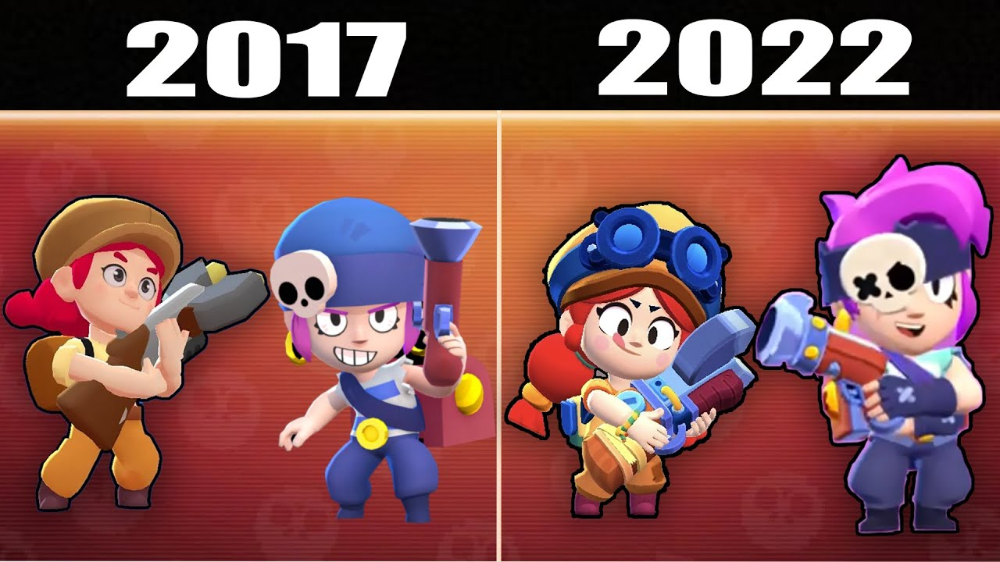

S V I L U P P O
Lo sviluppo è durato circa quattro anni, inclusa una fase di test pubblica, durante la quale il videogioco ha subìto diversi cambiamenti, come il passaggio dalla modalità verticale a quella orizzontale. Brawl Stars è stato annunciato il 14 giugno 2017 tramite una diretta su YouTubee il giorno successivo pubblicato in anteprima in Canada per iOS La disponibilità è stata successivamente estesa ad altri Paesi e il 26 giugno 2018 è stata pubblicata la versione beta per Android.Il gioco è stato reso disponibile in tutto il mondo il 12 dicembre 2018 e ha generato un profitto di 63 milioni di dollari a solo un mese dal debutto.

HOME